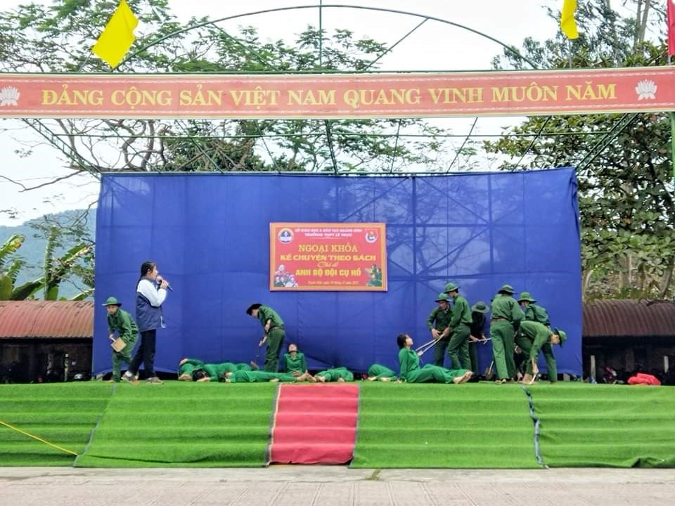

Hướng tới kỷ niệm 78 năm Ngày thành lập Quân đội nhân dân Việt Nam (22/12/1944 - 22/12/2022) và 33 năm Ngày hội Quốc phòng toàn dân (22/12/1989 - 22/12/2022), sáng ngày 19/12 tại trường THPT Lê Trực, tổ Văn – Thư viện kết hợp với Đoàn trường đã tổ chức thành công buổi ngoại khoá kể chuyện theo sách - chủ đề “ Anh bộ đội cụ Hồ”.
Tham dự buổi ngoại khoá có các thầy giáo trong Ban giám hiêu nhà trường, toàn thể giáo viên, nhân viên trong hội đồng sư phạm và học sinh toàn trường. Buổi ngoại khoá được tổ chức dưới hình thức hội thi kể chuyện về chủ đề “Anh bộ đội cụ Hồ”. Trải qua các vòng sơ khảo ban tổ chức hội thi đã chọn ra sáu tiết mục kể chuyện tiêu biểu để tham gia vòng chung kết trong buổi ngoại khoá.
Buổi ngoại khoá diễn ra rất sôi động bởi sự góp mặt của các tiết mục văn nghệ hát múa về người lính của các em học sinh. Các tiết mục văn nghệ được các em học sinh đầu tư tập luyện, dàn dựng rất công phu, trình diễn đầy lôi cuốn trên sân khấu đã đưa đến những giây phút hứng khởi ngay từ đầu buổi ngoại khoá. Những lời ca điệu múa của các em đã tôn vinh vẻ đẹp của người lính bộ đội cụ Hồ trong thời chiến cũng như trong thời bình hiện nay.
Phần thi kể chuyện được các em học sinh thể hiện một cách sáng tạo và tài năng qua giọng kể linh hoạt, nhập vai nhân vật, bộc lộ tâm trạng, cảm xúc khá tốt. Đặc biệt các lớp còn có sự chuẩn bị rất hoành tráng các đội minh hoạ với dàn diễn viên hùng hậu, diễn xuất tốt góp phần cho sự thành công của câu chuyện được kể. Những câu chuyện rất chân thực về Bác Hồ và các anh hùng như Bế Văn Đàn, Võ Thị Sáu,…đã giúp cho chúng ta thấy sự hi sinh cao cả của các thế hệ cha anh đi trước trong những năm tháng của cuộc kháng chiến bảo vệ Tổ quốc.
Với sự thể hiện xuất sắc của các tiết mục kể chuyện cũng như các tiết mục văn nghệ, buổi ngoại khoá đã tạo ra một năng lượng tích cực, lan toả vẻ đẹp của người lính bộ đội cụ Hồ, giáo dục truyền thống yêu nước, lòng biết ơn cho học sinh toàn trường.
Kết thúc ngoại khoá, Ban tổ chức đã trao giải nhất cho lớp 10A1 với câu chuyện “Người con gái miền đất đỏ”, giải nhì cho lớp 12A7 với câu chuyện “Mười cô gái ngã ba Đồng Lộc”, giải ba cho lớp 10A2 với câu chuyện “ Đôi dép Bác Hồ” và 3 giải khuyến khích cho 3 lớp 10A5; 11A1 và 11A6.
Một số hình ảnh trong buổi ngoại khóa



Thầy giáo Nguyễn Minh Đức - Hiệu trưởng trao phần thưởng cho các lớp.
Tác giả: Cô giáo Đoàn Thanh Bình - Tổ trưởng Ngữ văn